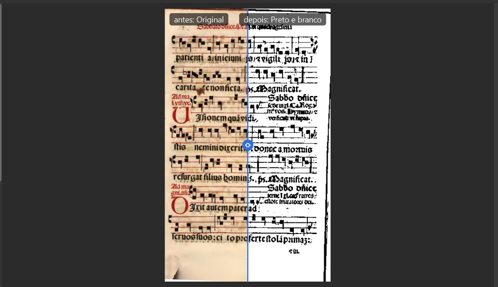
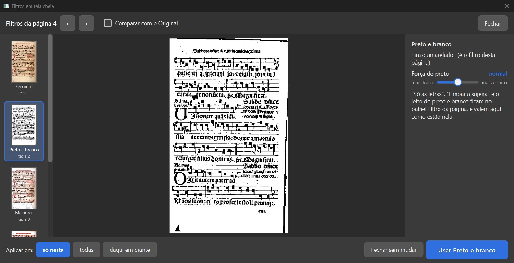
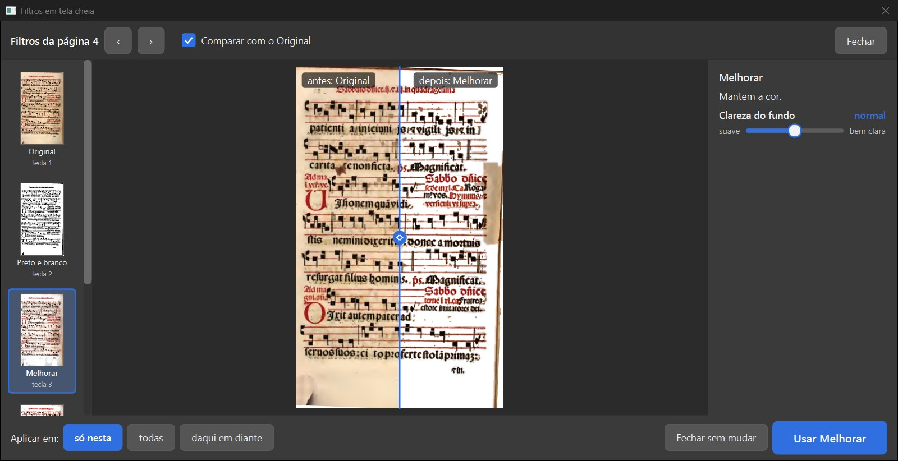
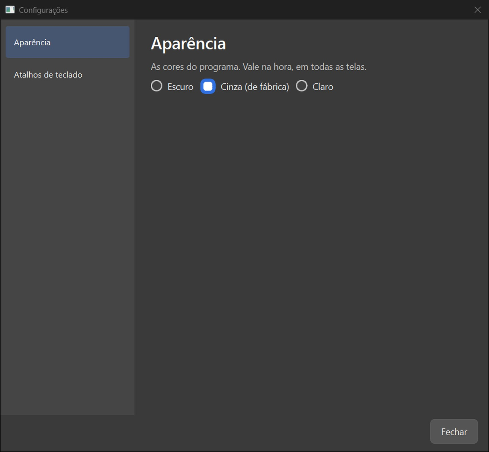
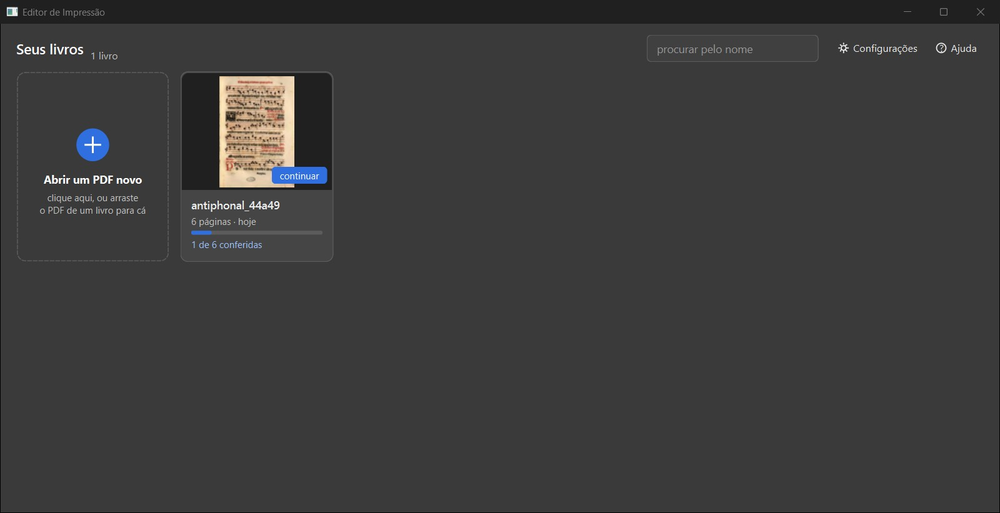
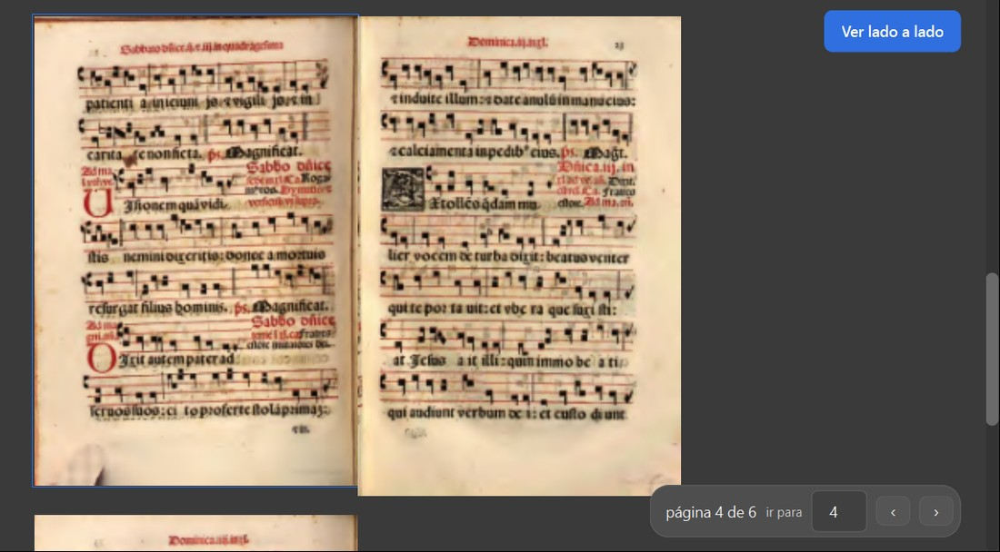
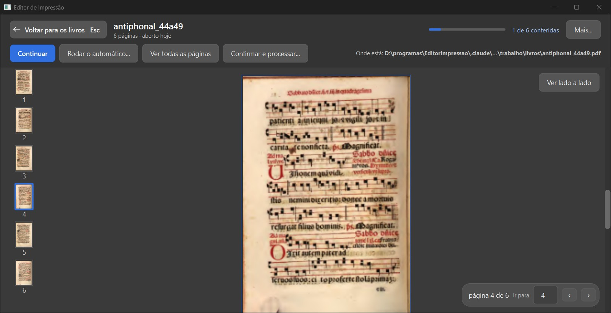
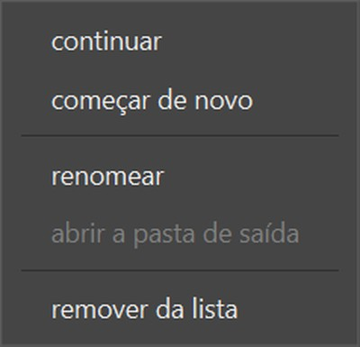
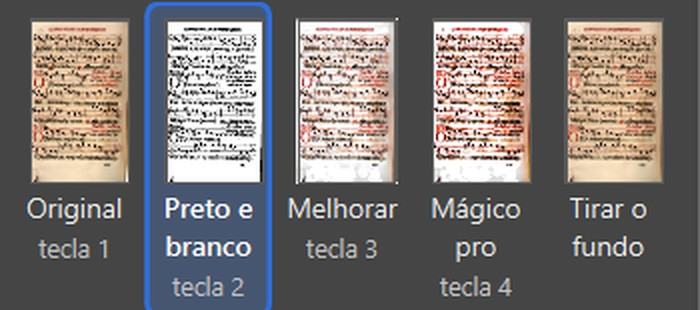
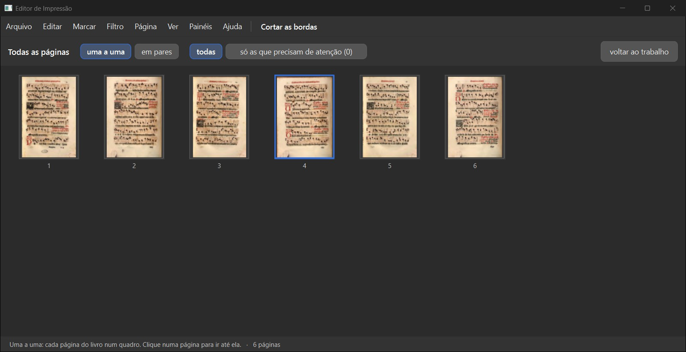

Ramo layout-etapas4a7-2026-10-19, código 448299e. Não marco nada como aprovado.
ui/ e dos testes nada muda desde o 60a0a3d.tests/test_dividir_na_tela.py): falha no 9e6956d ("(jeito: o do programa)"), passa no 448299e.| Quadro | Decisão dele | Bate? |
|---|---|---|
| Filtros em tela cheia | 601 (07/10): "A — A “um grande”, com a chave “Comparar com o Original”". | sim |
| Configurações com a lista das partes à esquerda | 807 (12/10): "B — Lista das partes à esquerda"; 707 (12/10): "C — Nos dois lugares". | em parte: faltam as partes "Para todos os livros" e "Lado direito" (ainda não existem) |
| A tela dos livros | "Como abrir um livro novo?" (06/10): "Cartão “+” no começo da grade"; rodada 6: Configurações e Ajuda no alto, sem barra de menus. | sim |
| O livro aberto na tela inteira | "O livro aberto fica assim?" (06/10): "Sim, fica assim" + "quero ter a opção de clicar e ver como ia ficar as paginas lado a lado [...] eu não quero padrão eu quero como opção um botão que eu clique e veja pagina lado a lado." | sim |
| Os três acertos da conferência anterior | 907 (20/10): "B — “o do Editor”". | sim (a grade ainda um pouco macia) |
O que você está escolhendo: se a tela cheia dos filtros ficou como você escolheu na rodada 11 (601).
O ícone no canto do título do painel "Filtro da página" (e o menu Ver > "Filtros em tela cheia") abre a tela: a fila dos filtros à esquerda, o escolhido grande no meio, o ajuste dele à direita. A chave "Comparar com o Original" começa desligada; ligada, vira o antes e depois com a linha que se arrasta. Escolher na fila só mostra; "Usar …" grava, "Fechar sem mudar" não muda nada (conferido: a página continuou em Preto e branco).
O que olhar: A linha do meio com "antes: Original" e "depois: …".
Sua decisão: 601 (07/10): "A — A “um grande”, com a chave “Comparar com o Original”".
Ressalva: O ajuste mexido aqui mostra só o filtro, sem o "Só as letras", até "Usar"; os outros ajustes do Preto e branco ficam no painel; o antes e depois não aproxima.
Opções: Está bom · Melhorar · Está pior · Ainda não entendi · e um comentário.

Ampliado: "Comparar com o Original" ligado

A tela cheia ao abrir (chave desligada)

Melhorar escolhido na fila, comparando
O que você está escolhendo: se a tela de Configurações e o lugar da troca de tema ficaram como você escolheu (807 e 707).
"Configurações" (no alto da tela dos livros) abre uma janela com a lista das partes à esquerda, "Aparência" e "Atalhos de teclado". Em "Aparência": Escuro, Cinza (de fábrica), Claro. O tema também se troca pelo menu Ver > Tema.
O que olhar: A lista à esquerda e os três temas.
Sua decisão: 807 (12/10): "B — Lista das partes à esquerda"; 707 (12/10): "C — Nos dois lugares".
Opções: Está bom · Melhorar · Está pior · Ainda não entendi · e um comentário.

A janela de Configurações
O que você está escolhendo: se a tela dos livros ficou como você escolheu na rodada 6 e na página de escolhas (cartão "+").
Só os cartões, sem barra de menus. O cartão "+ Abrir um PDF novo" vem no começo da grade (clique ou arraste o PDF). No alto: "procurar pelo nome", "Configurações" e "Ajuda". Um clique num livro abre o livro na tela inteira; "continuar" vai direto ao trabalho.
O que olhar: O cartão "+" no começo e o alto da tela.
Sua decisão: "Como abrir um livro novo?" (06/10): "Cartão “+” no começo da grade"; rodada 6: Configurações e Ajuda no alto, sem barra de menus.
Opções: Está bom · Melhorar · Está pior · Ainda não entendi · e um comentário.

A tela dos livros
O que você está escolhendo: se o livro aberto ficou como você escolheu na rodada 6.
As páginas rolam uma embaixo da outra, com a coluna de miniaturas à esquerda e a pílula "página 4 de 6 · ir para" embaixo. No alto: "Voltar para os livros (Esc)", "Continuar", "Rodar o automático…", "Ver todas as páginas", "Confirmar e processar…", "Mais…" (continuar, começar de novo, renomear, abrir a pasta de saída, remover da lista) e "Onde está". "Ver lado a lado" é um botão (não vem ligado): mostra as páginas em pares, como o livro aberto.
O que olhar: O botão "Ver lado a lado" e as duas páginas lado a lado.
Sua decisão: "O livro aberto fica assim?" (06/10): "Sim, fica assim" + "quero ter a opção de clicar e ver como ia ficar as paginas lado a lado [...] eu não quero padrão eu quero como opção um botão que eu clique e veja pagina lado a lado."
Ressalva: Na vista de uma página por vez, a página sai borrada (aumentada de uma imagem pequena); lado a lado sai nítida.
Opções: Está bom · Melhorar · Está pior · Ainda não entendi · e um comentário.

Ampliado: "Ver lado a lado" ligado

O livro aberto (uma página por vez)

O menu "Mais…"
O que você está escolhendo: se os três acertos que eu pedi ficaram bons.
1) O nome "Melhorar" cabe inteiro na fila do painel Filtro. 2) As páginas de "Todas as páginas" ficaram mais nítidas. 3) A frase de resumo da tela "O que fazer" diz "(jeito: o do Editor)", como a lista (907 B), com teste de reversão que falha no código de antes.
O que olhar: "Melhorar" inteiro na fila; as páginas da grade.
Sua decisão: 907 (20/10): "B — “o do Editor”".
Ressalva: A grade de "Todas as páginas" melhorou, mas ainda não fica bem nítida.
Opções: Está bom · Melhorar · Está pior · Ainda não entendi · e um comentário.

Ampliado: a fila com "Melhorar" inteiro

"Todas as páginas" depois do acerto
O que você está escolhendo: se a tela cheia dos filtros, as Configurações, a tela dos livros e o livro aberto entram no programa.
Cada quadro é uma coisa que você decidiu, com a foto da janela de verdade. O que ainda não está como no desenho está na lista de ressalvas.
Opções: Aprovado · Melhorar · Ainda não entendi
Editor de Impressão · gerado em 21/10/2026 às 10:50